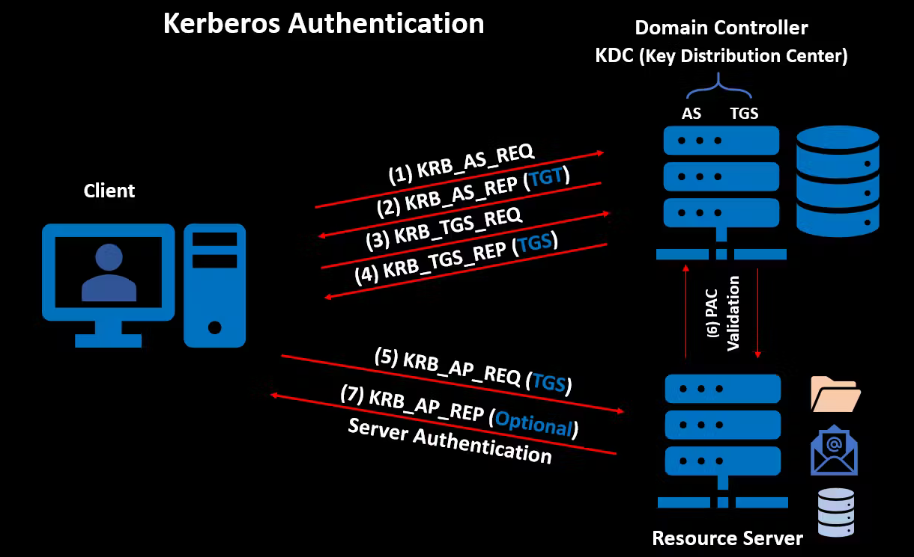

En este sistema la autenticación de usuarios y hosts basada en dominio se realiza a través de Kerberos.
Kerberos v5 (RFC1510) se implementó en windows server 2000 y sustituyó a NTLM (Windows NT LAN Manager) como opción de autenticación por defecto.
Actualmente NTLM se sigue utilizando como mecanismo de autenticación a nivel local de la máquina (no unidos a un domino)
Este protocolo Kerberos es el más antiguo y de uso común en la actualidad.
http://web.mit.edu/kerberos/www/dialogue.html
Este artículo es un diálogo entre dos personas Athena y Eurípides escrita por las personas que diseñaron este protocolo en el que discuten cómo ponerle solución a un problema siendo la solución final este protocolo Kerberos.
El usuario manda un paquete plano con su USUARIO al servicio de autenticación normalmente acompañado de otro paquete con un timestap cifrado con la clave del usuario,
El servicio de autenticación comprueba si existe el usuario, si es así coge su clave o password de su base de datos, genera una nueva clave de sesión y coge también la clave del ticket Granting ticket service
Cifra esta cadena de texto con la clave del ticket Granting ticket service, una clave privada del propio servicio que el usuario no conoce. Además simultáneamente crea otro paquete adicional con SessionKey1, lo cifra con la clave privada del usuario y todo esto lo envía al usuario.
El usuario recibe la información, des-encripta el paquete con su clave privada, ahora tiene la clave de sesión, el ticket granting ticket encriptado por la clave privada del ticket Granting ticket service y su clave privada personal.
El usuario usa el ticket granting ticket para interactuar con el ticket Granting ticket service pero para que no pueda ser interceptado sin más primero se crea un Autenticator
Y esto lo cifra con la SessionKey1.
Esto previene que, si alguien intercepta el ticket granting ticket no pueda interactuar con el ticket Granting ticket service porque no podría componer el Autenticator, ya que para esto se necesita la SessionKey que iba anteriormente incluida en un paquete cifrado con la clave personal del usuario.
Ahora el usuario envía al ticket Granting ticket service el Autenticator cifrado y el ticket granting ticket.
Y el ticket Granting ticket service utiliza su clave privada de servicio para descifrar el ticket granting ticket, conseguir la SessionKey y así descifrar el Autenticator, comprueba que el usuario que aparece en el ticket granting ticket es el mismo que el del Autenticator coinciden y si es así pasa la validación.
Ahora el ticket Granting ticket service crea un ticket de servicio para el sistema de ficheros. Para ello crea una nueva SessionKey2 que incluye en el ticket de servicio ficheros y este lo cifra con la clave privada del servicio de ficheros.
Esta nueva SessionKey2 la mete en otro paquete y lo cifra con la SessionKey1 que obtuvo del ticket granting ticket y que el usuario ya tiene.
Envía pues el ticket de servicio para el sistema de ficheros y el paquete SessionKey2 cifrado al usuario.
El usuario descifra la SessionKey2 con la SessionKey1, crea un nuevo Autenticator 2 e igual que antes lo cifra con la SessionKey2 que acaba de obtener.
Envia el Autenticator 2 y el ticket de servicio para el sistema de ficheros a el servicio de ficheros.
El servicio de ficheros descifra el ticket de servicio para el sistema de ficheros en el que está contenida la SessionKey2 con la que a su vez descifra el Autenticator 2, compara la información del ticket con la del Autenticator 2 y si coinciden puede validar el usuario.
Ahora si le envía los datos correspondientes al usuario.
A todo esto se le añade un paso adicional en la comunicación con el sistema de archivos ya que el servicio puede autenticar al usuario pero el usuario no puede autenticar a el servicio por lo que puede ser suplantado por un servicio falso.
En la autenticación mutua:
El usuario antes de mandar el comando para obtener el fichero del servicio, únicamente manda el Autenticator 2 y el ticket de servicio para el sistema de ficheros.
El servicio realiza todo el proceso anterior, autentica a el usuario y procede a autenticarse a si mismo. Crea un paquete con un timestamp, lo cifra con la SessionKey2 (ya que si fuese un servicio falso no podría haber obtenido esa clave) y lo envía al usuario.
El usuario descifra el paquete con el timestamp y si lo hace correctamente este verifica que el servicio es el auténtico y no un suplantador, ahora si le envía el comando para realizar uso del servicio.
Todo esto es necesario de saber porque se pueden realizar ataques a ciertos pasos y aprovechar para obtener ciertos datos, explotar el uso de los tickets, utilizarlos en nombre de otros usuarios, etc...
